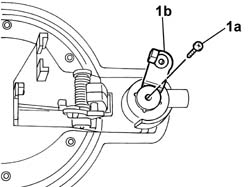
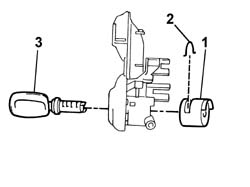

7020D22 lock block - r+r with handle removed
- Path
- Procedures > 70 FITTINGS > 7020 LOAD CARRYING COMPARTMENT DOORS > 7020D sliding door closure devices > 7020D22 lock block - r+r with handle removed
- Kind
- repair procedure (removal / refitting; the operation number is the code)
- Applies to
- all engines; all production periods
- Interactive page
- https://sloeber94.github.io/elrnDB-fDbl/en/#/2585064
Applies to: all engines; all production periods
 Removing
Removing
 Refitting
Refitting1. Undo the bolt (1a) and remove the control lever (1b) for key opening/closing via the barrel.

Applies to: all engines; all production periods
1. Using a suitable tool, remove the anti break-in device.
2. Remove the retaining clip.
3. Insert the key and remove the key barrel from its seating.

Applies to: all engines; all production periods
Refitting
RemovingFit the retaining clip in its seating.
Insert the key barrel in its seating until it locks into place.
Insert the anti break-in device.
Fit the control lever for key opening/closing via the barrel and secure it with its bolt.